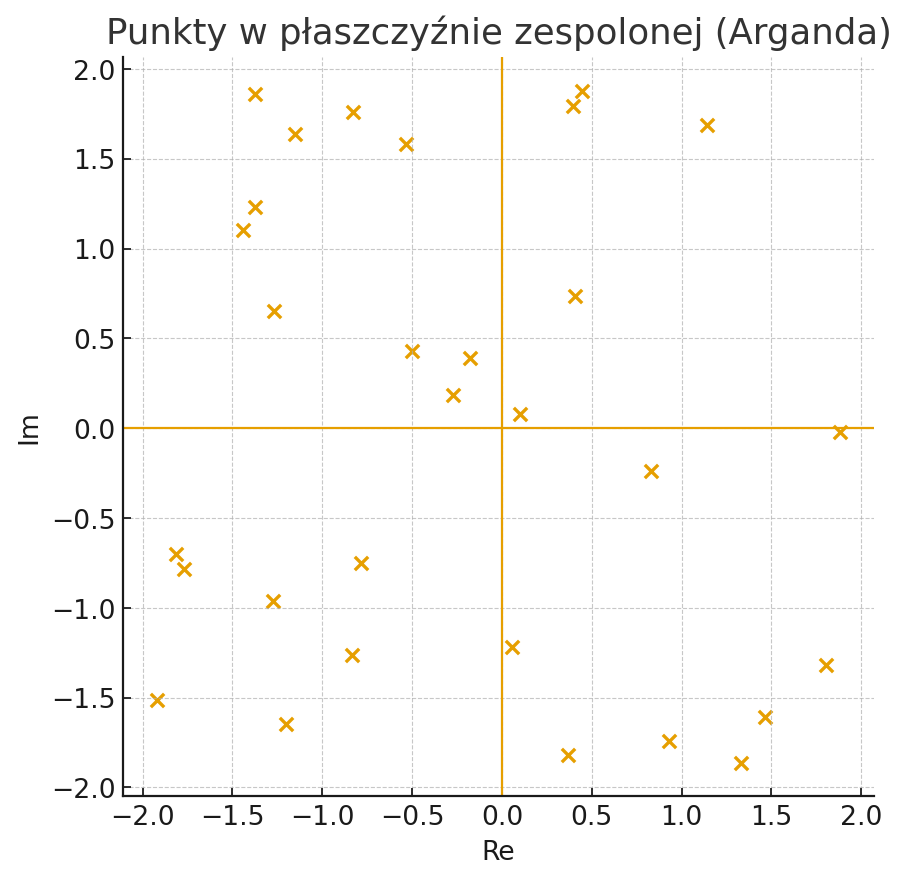
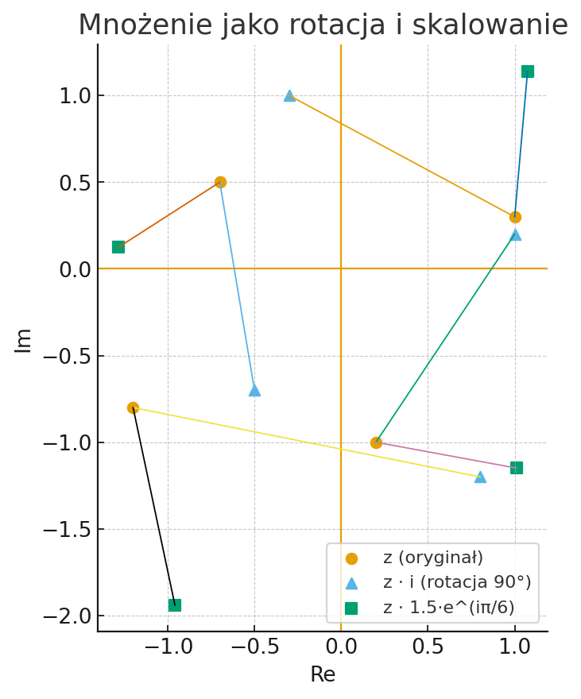
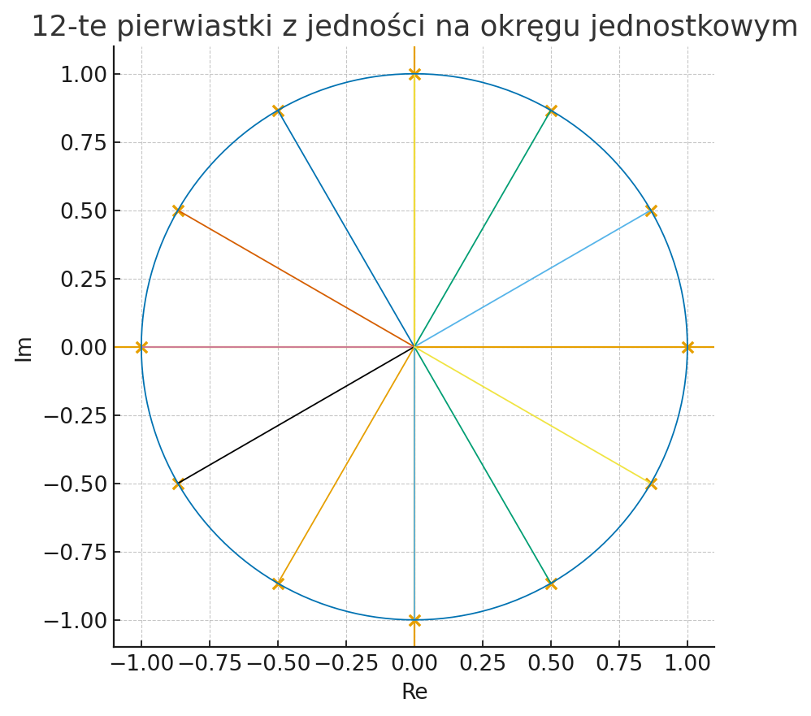

Krótki poradnik i notatnik Jupyter pokazujący podstawy liczb zespolonych oraz ich wizualizacje w Pythonie.
„Dobrze narysowana liczba zespolona mówi więcej niż akapit definicji.”
Jupyter Notebook to interaktywne środowisko łączące kod, wyniki i opis (Markdown) w jednym pliku .ipynb. Pozwala uruchamiać komórki z kodem krok po kroku, wizualizować wyniki (wykresy) i dodawać objaśnienia. Idealne do eksploracji danych i dydaktyki.
complex_numbers_tutorial.ipynbnumpy, matplotlib


Minimalna, „lekka” instalacja.
# 1) (opcjonalnie) wirtualne środowisko
python -m venv .venv
# Windows
.venv\Scripts\activate
# macOS/Linux
source .venv/bin/activate
# 2) Zależności
pip install --upgrade pip
pip install jupyterlab numpy matplotlib
# 3) Uruchom
jupyter lab
# w interfejsie otwórz: complex_numbers_tutorial.ipynb
Wygodne środowisko „wszystko w jednym”. Dobre na start.
conda create -n zespolone python=3.11 jupyterlab numpy matplotlib -y
conda activate zespolone
jupyter lab
| Kryterium | Python + pip | Anaconda/Miniconda |
|---|---|---|
| Szybkość startu | ✅ szybki | ⚠️ większa instalacja |
| Izolacja środowisk | ✅ venv | ✅ conda env |
| Zarządzanie pakietami | dobre (pip) | bardzo dobre (conda) |
| Rozmiar | mały | większy |
| Dla początkujących | dobra | bardzo dobra |
Uwaga: wybór zależy od preferencji i konfiguracji. Jeśli nie masz jeszcze Pythona, Anaconda bywa najprostszą opcją na start.